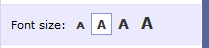
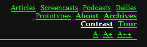

Changing the look of a website
According to the usability requirements, a website is well designed when it does not confuse the visitor: no useless special effects, no "innovative solutions" that revolutionize the common GUI, but a focus to ease of use, especially considering the less experienced. In other words, a site (like any other computer application) should be adapted to user needs, never to do the opposite.
For this reason the so-called style switcher is increasingly popular, as it allows users to customize their browsing experience, offering them the choice of how to see the website. Some typical examples are the following:
- choice of font size: the ability to enlarge the page
text to improve readability, as well as being a very useful tool, it is also one of
the requirements for the web accessibility;

- simplified page versions: another of the accessibility requirements
is to meet users who have severe visual impairments (low vision,
color blindness), so it is useful to provide the ability to view the page
without graphics or in a high contrast mode;

- customized page versions: allowing the choice of page colors is another thing that can improve the usability of the website, making it more pleasing to the user.
A style switcher for Contao
Contao is an open source content management system (CMS) which can be expanded flexibly and inexpensively. Since Contao does not offer a native tool for the insertion of a style switcher in a website, I developed this extension that solves the problem.
The module is called "zad_switcher" and you can install it directly from the extension catalog in your administration area.